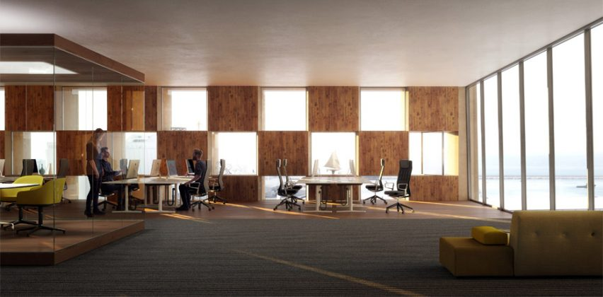
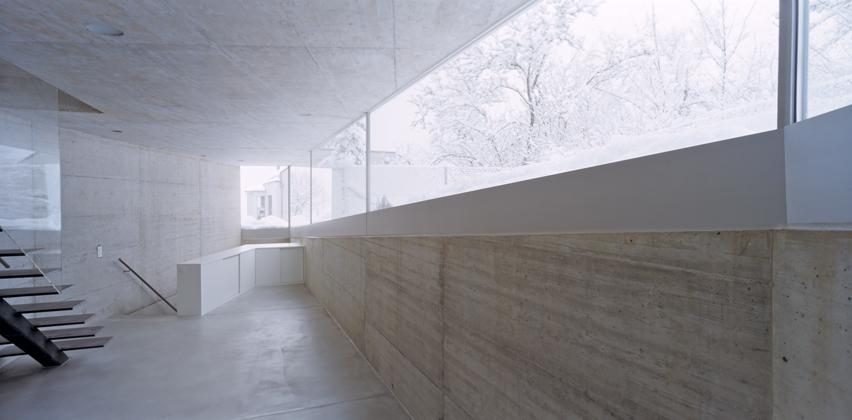
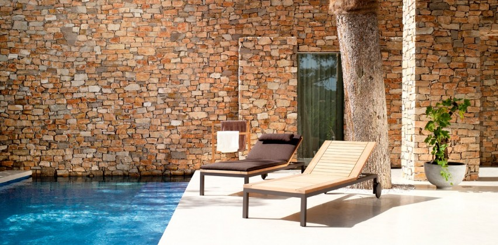

- 
Main image runner 1
-

Main image runner 2
- 
- 
Welcome to ADA
Project Design
{kind=link}
Schematic design We gain an understanding of your requirements and aspirations, followed by an assessment of the opportunities and constraints offered by the building site. A preliminary of regulations and restrictions is undertaken followed by a number of sketch design options to reach your preferred design.
These drawings have a level of detail suitable for obtaining cost estimates at the completion of this stage.
{kind=link}
Detailed Design Development Depending on the cost outcomes from the first stage, the preferred and approved design is developed into the final design for Development Application (DA) submission to Council. Pre-application meetings are organised with Council and adjoining neighbours to facilitate the planning process and assist in obtaining approval.
{kind=link}
Construction Documentation The DA is developed into detailed drawings, specifications and schedules to ensure the design vision is not lost during construction. The work is also co-ordinated and integrated with the drawings suitable for the Construction Certificate with Council and tendering for builders.

Portfolio At ADA we specialise in sophisticated and distinctive residential projects, from high quality individual houses to multi-unit apartment developments. ADA work encompasses a wide variety of architectural styles ranging from heritage restoration work to innovative contemporary buildings.
Current commissions include residential, commercial, maritime, heritage restoration, refurbishment and interior fit-out projects.

Contract Administration Following the tender process and negotiations with the preferred builder, the construction documentation is developed into Contract documents between you and the builder. The administration of the contract between you and the builder is provided to ensure design quality is maintained throughout the construction process. This stage includes regular site visits, site meetings and certification processes.
{kind=link}
Australian Design Architects Established in 2001, Australian Design Architects believe contemporary Australian architecture should capture the spirit and culture of our land. We believe homes should provide a refuge from the outside world and that workplaces should have the ability to inspire. stay tuned.